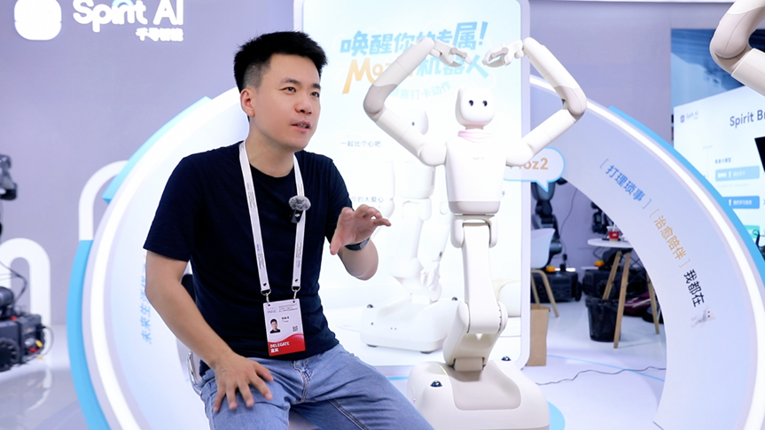

阅读本篇PDF ↗
“这一代机器人真正的卡点不在硬件，而在大脑。”2026年7月18日，在世界人工智能大会期间接受中国财富网采访时，千寻智能创始人、CEO韩峰涛把自己的判断说得很直接。对这位在机器人行业工作多年的创业者来说，机械臂能不能动、动作够不够稳，已经不是他最想解决的问题。他更关心的是，机器人离开熟悉的演示环境后，能不能理解一项新任务，并把它做完。
这个问题，也能解释他为什么选择第二次创业。此前，韩峰涛联合创办工业机器人企业珞石，长期负责技术工作；2024年1月，他与研究人工智能的高阳共同创办千寻智能。前一次创业面对的是制造和交付，这一次，他把重点放在了机器人的通用“大脑”上。两段经历之间的变化，映照出具身智能行业正在尝试跨越的一道门槛：让机器人从完成事先安排好的动作，走向应对有变化的真实工作。

千寻智能创始人、CEO韩峰涛接受采访。图片来自原采访文档，摄影者未注明。 从“知道该做什么”到“真的做出来”
韩峰涛用“我渴了”举例，解释语言模型与机器人之间的距离。一个聊天模型可以建议人去冰箱拿水，但机器人还要知道怎样走近冰箱、拉开门、握住瓶子，再把水递给人。这些动作涉及视觉判断、关节控制，以及与物体接触时不断发生的变化。把一句正确的回答变成一连串可靠的动作，才是具身智能要补上的部分。
行业常用的VLA，即视觉、语言、动作模型，试图把看见的环境、听到的要求和实际执行连接起来。对普通用户来说，这意味着不必先学会编程，才有可能让机器人替自己做事；对企业来说，则意味着同一套机器能否适应更多任务，减少每换一道工序都要重新开发、调试的投入。这也是通用“大脑”具有商业吸引力的原因：如果适应新任务的成本足够低，机器人可服务的工作才有机会增加。
不过，能理解一句话，并不等于能够稳定执行。家庭里的杯子、抽屉和杂物没有统一摆放方式，工厂也会有不同的零件和工序。演示时完成一次，与长期使用时反复完成，是两种要求。韩峰涛选择做“大脑”，实际上是在押注模型能够逐步缩小这段距离；这也是公司未来需要用产品表现来回答的问题。
数据的价值，要在机器人身上兑现
训练语言模型，可以利用互联网长期积累的文字；训练机器人，则需要知道人在真实环境中怎样操作物体。这样的数据不能只靠阅读网页获得。采访中，韩峰涛介绍，千寻正在通过穿戴式设备，让工作人员进入家庭、工厂、仓库等环境采集动作数据。
按照他在当次采访中披露的口径，千寻的数据采集网络覆盖100多个城市、40多万个真实场景采集点，有1000多名工作人员参与。这些数字来自公司自述，原采访并未进一步说明“采集点”的统计定义与持续运行情况，因此不能把它理解为40多万台机器人已经投入使用。但它至少呈现了公司的一项选择：把相当一部分工作放到展台之外，去获得真实操作中的信息。
数据多，还要能用。韩峰涛特别强调，采集设备需要与最终执行任务的机器人联合设计：“我们采集用的手和机器人干活用的手，基本上一模一样。”这句话背后的问题很实际：人的动作被记录下来以后，怎样才能让机器学会？如果采集和执行的条件差异太大，数据即使积累很多，也未必能转化成机器人的能力。
由此再看数据的商业价值，关键便不只是拥有多少条记录。采集需要组织人员，数据需要处理，模型需要训练，最后还要放回任务中检验。哪一类失败值得补充数据，哪些动作学会之后能够迁移到别的任务，都需要在这个过程中逐步判断。公司的积累能否成为竞争优势，要看它能否持续改善机器人的实际表现，而不能只由采集规模来证明。
拼速度，拼的是一整轮改进
“拼数据采集速度、数据处理速度、模型训练测试速度，拼谁的闭环转得更快。”韩峰涛对行业竞争的概括，将几个看起来分散的环节放在了一起。这里的速度，并非单独把训练做快一些，而是从发现问题到采到合适数据、完成训练，再到验证改进，整个过程需要多久。
这也使具身智能公司的组织方式变得值得观察。算法研究、硬件设计与场景测试如果彼此脱节，模型里的一次进步，未必能在机器人身上顺利复现。千寻由有工业机器人经验的韩峰涛与研究AI的高阳共同创办，所要连接的正是这两类能力。不过，创始团队的履历只是起点，跨环节的合作最终仍要落实为产品和交付结果。
采访中另一个明确的选择，是做通用“大脑”，还是先服务某个垂直行业。韩峰涛选择前者。他用手机作比喻：硬件和操作系统可以通用，不同行业再在上面安装自己的应用。沿着这个设想，同一套基础能力有机会被更多场景复用，公司也不必每进入一个行业，就从头再做一遍。
这是一项有吸引力、也需要长期验证的判断。通用能力最终仍要落在具体工作里：谁愿意购买，任务多久能完成，失败时需要多少人工接手，维护和使用成本是多少。通用模型扩大了公司想象中的市场，具体岗位则决定客户是否愿意付费。两者能否接上，值得在后续报道中继续跟踪。
“ChatGPT时刻”之后，还要回答什么
韩峰涛在这次采访中预计，具身智能的“ChatGPT时刻”可能在2027年底至2028年初出现。他给出的图景是：把机器人放进此前没见过的环境，随机布置一项任务，它也能完成到七八十分。需要说明，这是一位创业者在2026年7月作出的预测，并非公司已经实现的能力，也不是行业共同确认的时间表。
但这个定义仍有启发。一次让公众相信“机器人确实能干活”的表现，可能推动更多客户尝试使用它；从尝试到日常依赖，中间还有稳定性、成本与责任分工等问题。机器人为人分担工作之后，原来必须由人完成的哪些步骤可以省下来，哪些环节仍需要人照看，会比一个笼统的智能水平更容易被客户衡量。
采访接近尾声，韩峰涛谈到这次创业的机会：“AI在数字世界已经很聪明了，我们要把它带进物理世界。”对千寻来说，这句话对应的是一项长期投入：采集数据、训练模型、反复测试，直到机器人能在真实工作中派上用场。对观察这个行业的人来说，它也留下了一个具体的追问：当机器人走出展台，究竟有谁开始放心地把工作交给它？
采访与资料说明
本文依据作者提供的《中国财富》千寻智能韩峰涛采访稿重新组织，采访时间为2026年7月18日，原稿标注发布时间为7月19日。直接引语均出自原采访；本文未新增采访。文中商业分析为作者对采访材料的延伸思考。整理与文字润色使用AI辅助。
关于数据规模、技术路线及未来时间表的表述均按受访者观点呈现。以下为公开核对资料：
原采访公开转载 · 千寻智能官网 · 中国财富通相关报道